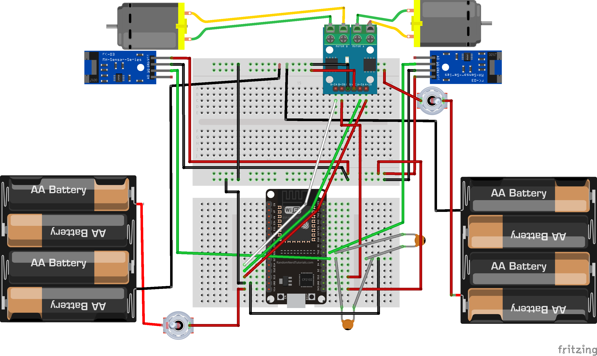

Hadabot Parts
Components
| L9110S 2 Channels Stepper Motor Dual motor Driver Controller Board |
LM393 Speed Sensor Module |
ESP WROOM 32 board |
Breadboards |
| Toggle Switch |
Battery holders |
DC Gear Motor TT Motor for Smart Car Robot DIY |
Cables |
For LM393 Speed Sensor Module, there are two versions, one with 3 pins (GND,VCC,OUT) and with 4 pins (VCC,GND,DO,AO). You can assume that DO is OUT.
Connections

References
- Build the Hadabot Turtle Kit